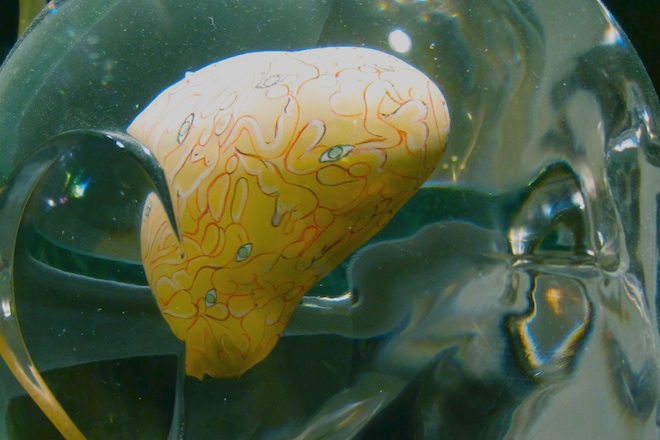

General Psychiatry
I am a general psychiatrist and offer comprehensive psychopharmacology, medication management and talk therapy services in a private outpatient setting.
I am a general psychiatrist and offer comprehensive psychopharmacology, medication management and talk therapy services in a private outpatient setting.
I specialize in treating Substance Use Disorders, alcoholism, Internet Addiction and other Behavioral Addictions using a combination of medications and psychotherapy as an addiction psychiatrist.
I provide technical consulting services in mental health technology development and data science, especially in susbtance use disorder treatment, and interface with the New York technology and medical community.

I conduct academic research at the interface of neuroscience, psychiatry, addiction science, statistics and artificial intelligence.
A brief biography
Forms and information for patients